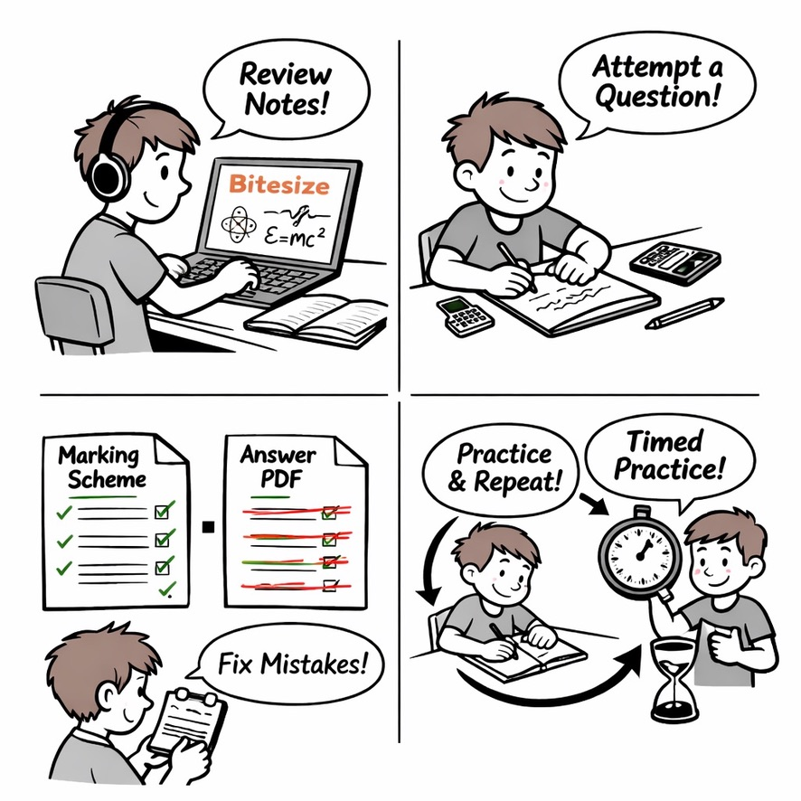

How To Use This Site

How to use StemInteract.uk (quick guide)
Each topic page provides BBC Bitesize notes + past SQA Higher questions by topic + official SQA marking schemes + worked answer PDFs + optional AI strategy guidance. Use them in this order:
- Pick one weak topic (don’t jump about).
- BBC Bitesize first (5 minutes): skim key ideas, formulae and diagrams.
- Attempt a question (no notes, no AI):
Calculations: equation -> substitution -> unit.
Explanations: short, precise, mark-winning sentences.
If stuck, think hard for a few minutes before seeking help. - If needed: use AI for strategy hints only (not the full solution).
Open ChatGPT, Gemini or Claude, and paste the prompt from the clipboard to ask for a strategy. Then return and complete the question yourself. - Mark with the official SQA scheme: tick the marking points you earned (method marks matter).
- Only then open the Answer PDF: correct in a different colour and rewrite the “ideal” answer if needed.
- Make an error log “fix rule”: what lost marks + what you’ll do next time (e.g. “Convert to SI first”, “State relationship before using it”, “Check powers of 10”, “Check signs/directions”).
- Do the next question in the same topic straight away. Repeat until mistakes reduce.
- When you’re scoring 70-80%, switch to timed practice and always check: units, signs/directions, powers of 10, sig figs.
Best routine: Bitesize -> Attempt -> (AI if stuck) -> Mark -> Fix -> Repeat.
This is a non-commercial site maintained by volunteers, running no ads and generating no revenue. The site contains links to material kindly provided on open public access by SQA and others, whose generosity is hereby acknowledged and appreciated.